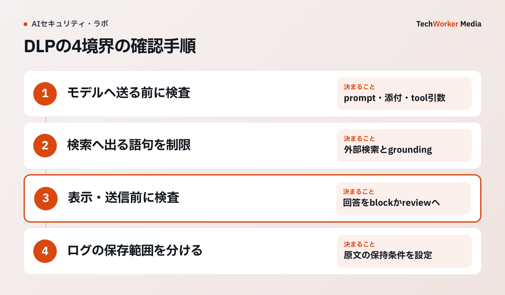

生成AIのDLPは、どの境界で何を止める設計ですか？
prompt、検索、回答、ログの4つの境界で、検知・遮断・例外判断を分けて設計します。
生成AIのデータ漏えい対策を「利用者に注意してもらう」だけで終えると、漏れた経路を説明できません。候補は、貼り付けたprompt、参照した文書、外部検索へ渡った語句です。モデルが返した回答と、運用ログも候補です。
DLP（Data Loss Prevention、情報漏えい防止）は、機密データらしき値を検知する製品機能の名前です。同時に、どの境界で検知し、何を止め、誰が例外を判断するかという設計でもあります。
すべてのデータを一律に遮断すると、業務に必要な情報まで止まります。利用者は管理外の経路へ移ります。検知だけして送信を続けると、DLPはアラートを増やすだけになります。
そこで、データ区分、送信先、操作目的、外部公開の有無に応じて、block、警告、マスキング、承認、記録を分けます。
DLPは、どんな手順で導入しますか？
入力、検索、回答、ログの順に境界を決めます。最後に、監視から強制へ段階的に進めます。

顧客コードを含む問い合わせを要約する設計例では、モデルへ送る前の検査と、外部検索へ渡す語句の制限を分けます。回答にコードを出してよい相手かも確認し、調査ログへ原文をそのまま複製しません。製品ごとの対応機能は同一ではありません。
- モデルへ送る前の入力を制御します。prompt、添付ファイル、toolに渡す引数は、最初に外部へ出る可能性がある地点です。Cloudflare AI GatewayのDLPは、promptと応答の両方を検査する機能です。providerへ送る内容と、返ってくる内容を対象にします。個人番号や認証情報など、用途を問わず送らせない区分はblockします。契約番号など業務上必要な値は、送信先・利用目的・契約条件が満たされる場合だけ許し、検知した事実を残します。
- 固有の値を検知対象へ加えます。既製のパターンだけでは足りません。顧客コード、社内の案件名、製品の未公開名称は、分類ルールへ追加します。Google Cloudのcustom detector（Sensitive Data Protectionの機能）は、正規表現、辞書、保存済みの大規模辞書を使えます。導入前に、個人情報、営業秘密、認証情報、外部公開不可の扱いを、業務・法務・情シスで定義します。
- 検索とgroundingを別の経路として制御します。groundingは、外部の情報を回答の根拠にする仕組みです。機密値を含むpromptを止めても、外部web検索、外部メール、RAGの文書を根拠にすれば、別の漏えい経路が残ります。Microsoft Purview DLPは、次の制御を案内しています。機密情報を含むpromptでは、外部web検索をgroundingに使わせません。機密ラベル付きのファイルやメールも、処理に使わせません。
- 回答とログに別の方針を置きます。回答側では、入力に無い機密情報をRAGやtoolから取り出して表示するリスクがあります。出力は、表示・送信の直前に検知し、blockまたはreviewへ回します。ログは、実行ID、model、tool、statusを残し、promptと応答の全文は既定で保存しません。調査目的で原文を保存する場合は、閲覧権限、暗号化、保持期限、削除手順を分けます。
- まず監視し、例外を調整してから強制します。初日から広いルールで全件blockすると、通常業務が止まり、回避経路が生まれます。MicrosoftのCopilot向け既定DLP policyは、simulation modeで記録します。実際にprompt処理をblockするには、enforce modeへ切り替えます。対象業務に不要な検知を外し、影響を確認してから強制します。
検索・groundingの制御で、DLPを認可の代わりにしてはいけません。「誰がその文書を参照してよいか」は、認可の問題です。この点は、RAGの権限漏れを防ぐで扱っています。DLPは、認可済みの情報でも、どの経路へ出してよいかを補助的に判断します。
外部メールをgroundingから除外する機能には、別の目的もあります。信頼できない内容がprompt injectionとして影響する経路を減らす目的です。
運用では、検知件数だけを成功指標にしません。次の4点を分けて見ます。
- どのデータ区分・経路で検知したか
- block後に正当な業務が止まったか
- 例外申請が繰り返されていないか
- 検知されずに事故が起きていないか
DLPがうまくいかない例や限界には、どんなものがありますか？
経路ごとの設計がない、streamingの遅延を見落とす、検知を万能と考える、の3つが典型です。
- 経路を書き出さずに導入する。promptだけを止めても、検索、回答、ログの経路が残ります。document、利用者、モデル、外部接続先ごとの境界を混ぜないでください。
- streaming応答の遅延を見落とす。回答を逐次表示する場合は、Cloudflare AI Gatewayの応答検査（response scanning）による待ち時間を確認します。有効にすると、モデル提供元からの応答全体を一時保存してから検査するためです。応答をすぐ表示する体験との両立、timeout、失敗時の画面表示を、実装前に確認します。
- マスキングの方式を目的に合わせない。Google Cloudは、マスキング、置換、tokenizationなどの変換を示しています。分析で同一人物・案件を結び直す必要がある場合だけ、鍵管理を分離した可逆tokenを検討します。不要なら、削除・非可逆化を優先します。
- 検知を万能と考える。DLPのpattern検知には、誤検知と見逃しがあります。機密語を含まない営業秘密、文脈に依存する個人情報、画像や暗号化された添付は、設定だけで完全に判定できません。
DLPは、送信先との契約、目的外利用、利用者の権限、prompt injectionを単独で解決しません。高影響の送信・公開には、認可、承認、監査を重ねます。検知ルールと製品の対応範囲は、導入時に公式資料で再確認してください。
境界ごとの制御は、どう違いますか？
入力はblockと条件付き許可、検索は経路の制限、回答は直前の検査、ログはメタデータ中心です。
| 境界 | 主な制御 | 注意点 |
|---|---|---|
| 入力（prompt・添付・tool引数） | 区分に応じてblock、または条件付きで許可して検知を記録 | 固有の値は分類ルールへ追加する |
| 検索・grounding | 機密promptでの外部web検索、機密ラベル付きファイルやメールの利用を制限 | DLPは認可の代わりにならない |
| 回答 | 表示・送信の直前に検知し、blockまたはreview | streamingではbufferの遅延が出る |
| ログ | 実行ID、model、tool、statusなどのメタデータを残す | 全文は既定で保存せず、保存する場合は権限・暗号化・保持期限を分ける |
よくある質問
機密データらしき値を検知する製品機能の名前です。同時に、どの境界で検知し、何を止め、誰が例外を判断するかという設計も指します。データ区分、送信先、操作目的、外部公開の有無に応じて、block、警告、マスキング、承認、記録を分けます。
十分ではありません。外部web検索、外部メール、RAGの文書を根拠にする別の経路が残り、回答やログからも漏れ得ます。prompt、添付、tool引数、grounding、回答、ログの各経路を書き出して、経路ごとに制御を置きます。
勧めません。広いルールで全件blockすると通常業務まで止まり、利用者が管理外の経路へ移ります。まずsimulationで検知を記録し、誤検知と業務影響を確認して不要な検知を外してから、enforceへ進みます。
次の一歩は何から始めればよいですか？
まず経路を書き出し、データ区分ごとの対応を決めて、simulationで検知を確かめます。
導入前の最小チェックリストです。
- prompt、添付、tool引数、grounding、回答、ログの各経路を書き出したか
- データ区分ごとにblock、警告、マスキング、承認、記録のどれを使うか決めたか
- 固有の顧客コードや案件名を、検知対象へ追加する責任者を決めたか
- simulationの結果から、誤検知・業務影響を確認してからenforceへ進むか
- DLP、認可、データ保持と削除を別の制御として設計したか
TechWorkerでは、内製AIツールで扱うデータを棚卸しします。モデル呼出し、検索、tool、ログのそれぞれに必要なDLPと権限境界を設計します。目指すのは、業務に必要な情報を、必要な経路だけで安全に扱える状態です。利用を止めることは目的にしません。
出典（一次情報と確認範囲）
確認日：2026年9月11日。製品仕様・制度は更新されるため、導入時はリンク先の最新版を再確認してください。本文は技術的な設計例です。国内法や契約上の義務は、導入先の条件に応じて確認してください。
- Cloudflare AI Gateway DLP：promptと応答を検査する
- AI GatewayでDLP profileとactionを含むpolicyを設定できる
- Microsoft Purview DLP：機密promptの外部web検索などを制限できる
- Microsoft既定DLP policy：simulationで記録し、blockはenforceで行う
- Google Cloud：マスキング、削除、置換、tokenizationを示す
- AI Gateway：payloadを保存せず、メタデータを残せる
- OWASPはLLMアプリにおけるSensitive Information Disclosureを主要リスクとして扱う